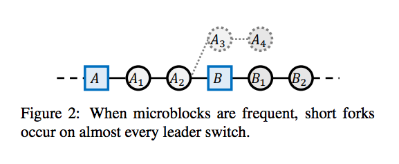

Bitcoin-NG is a blockchain protocol that serialized transactions, much like Bitcoin, but allows for better latency and bandwidth without sacrificing other properties. Paper also introduced performance metrics such as protocol goodput and latency, as well as various aspects of its security.
In the blockchain, the parameters that control system performance are block size and block interval. Increasing block size improves throughput, but the resulting bigger blocks take longer to propagate in the network. Reducing the block interval reduces latency, but leads to instability where the system is in disagreement and the blockchain is subject to reorganization. Currently, Bitcoin takes 10 minutes between consecutive blocks to add a new block to the blockchain. The block size is currently set at 1MB, yielding only 1 to 3.5 transactions per second for Bitcoin.
The paper claims that the Bitcoin-NG's latency is limited only by the propagation delay of the network, and its bandwidth is limited only by the processing capacity of the individual nodes. Bitcoin-NG achieves this performance improvement by decoupling Bitcoin’s blockchain operation into two planes: leader election and transaction serialization. The leader election ensures that the system is able to continually process transactions. Bitcoin-NG divides time into epochs, where each epoch has a single leader.
The protocol introduces two types of blocks: key blocks for leader election and microblocks that contain the ledger entries. Each block has a header that contains, among other fields, the unique reference of its predecessor; namely, a cryptographic hash of the predecessor header.
Key blocks are used to choose a leader. It contains the reference to the previous block, the current Unix time, a coinbase transaction to pay out the reward, a target value, and a nonce field containing arbitrary bits. Unlike Bitcoin, a key block contains a public key that will be used in subsequent microblocks. In case of a fork, just as in Bitcoin, the nodes pick the branch with the most work, aggregated over all key blocks, with random tie breaking.
As a leader, the node is allowed to generate microblocks at a set rate smaller than a predefined maximum.
The maximum rate is deterministic, and can be much higher than the average interval between key blocks.
The size of microblocks is bounded by a predefined maximum.
A microblock contains ledger entries and a header. The header contains the reference to the previous block, the current Unix time, a cryptographic hash of its ledger entries, and a cryptographic signature of the header.
The signature uses the private key that matches the public key in the latest key block in the chain. For a microblock to be valid, all its entries must be valid according to the specification of the state machine, and the signature has to be valid. Figure 1 illustrates the structure. Note that microblocks do not affect the weight of the
chain, as they do not contain proof of work. This is critical for keeping the incentives aligned.
When a miner generates a key block, he may not have heard of all microblocks generated by the previous leader. If microblock generation is frequent, this can be the common case on leader switching.
The result is a short microblock fork, as illustrated in Figure 2. Such a fork is observed by any node that receives the to-be-pruned microblock (blocks A3 and A4 in the figure) before the new key block (block B in the figure). It is resolved once the key block propagates to that node. Therefore, a user that sees a microblock should wait for the propagation time of the network before considering it in the chain, to make sure it is not pruned by a new key block.

By the protocol, a leader is compensated for her efforts. Remuneration is comprised of two parts. First, each key block entitles its generator a set amount. Second, each ledger entry carries a fee. This fee is split by the leader that places this entry in a microblock, and the subsequent leader that generates the next key block. Specifically, the current leader earns 40% of the fee, and the subsequent leader earns 60% of the fee, as illustrated in Figure 1. In practice, the remuneration is implemented by having each key block contain a single coinbase transaction that mints new coins and deposits the funds to the current and previous leaders.
In Bitcoin-NG, to invalidate microblock fork, the entry is called a poison transaction, and it contains the header of the first block in the pruned branch as a proof of fraud. The poison transaction has to be placed on the blockchain within the maturity window of the misbehaving leader’s key block, and before the revenue is spent by the malicious leader. Besides invalidating the compensation sent to the leader that generated the fork, a poison transaction grants the current leader a fraction of that compensation,e.g., 5%.
In Bitcoin-Ng, miners are motivated to extend the heaviest, longest chain, and include transactions in their microblock. In Bitcoin-Ng extend heaviest chain and ensures termination and agreement properties of Nakamoto consensus. Microblocks carry no weight and that helps to prevent attackers from keeping secert microblocks and mining on them.
In Bitcoin-Ng, leaders can get full fees by mining transactions on microblocks and did not publish them until successfuly generate a next key block.
When issuing microblocks at a high frequency, Bitcoin-NG observes a fork almost on every key block generation, as the previous leader keeps generating microblocks until it receives the key block (Figure 2). These forks are resolved quickly once the new key block arrives at a node, it switches to the new leader.
In comparison, when running Bitcoin at such high frequency, forks are only resolved by the heaviest chain extension rule, and since different miners may mine on different branches, branches remain extant for a longer time compared to Bitcoin-NG. Bitcoin-NG may also experience key block forks, where multiple key blocks are generated after the same prefix of key blocks, as shown in Figure 3. This rarely happens, due to the low frequency and quick propagation of the small key blocks. The duration of such a fork may be long, lasting until the next key block. The result is therefore infrequent, but long, key block forks.
There are many metrics in Bitcoin-NG and I will mention three of them.